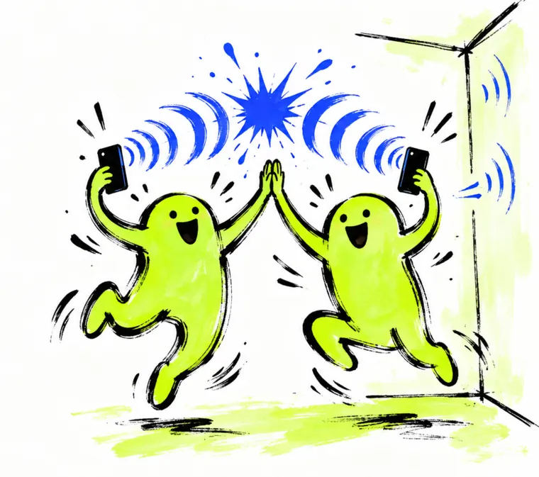

ETHGlobal Tokyo 2026 · live on ENSv2 Sepolia
Who met whom,
measured by sound.
Every attendee holds a name under enconomy.eth. When two phones
measure each other within about 60 cm and both people agree, each name’s eth.enconomy.met text record goes up.
- meetings
- …
- names
- …

Latest meeting